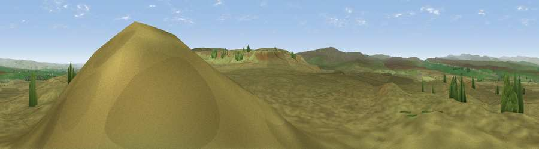

Viewpoint near Bowes
#11483 in England · top 27% of its area beats it · near BowesWhere it is
The exact computed spot (NY 97775 10275). Click the marker for map links.
The view, rendered

A 360° render of this exact spot computed from the terrain model, tree cover and land cover — summer colours, afternoon light, calibrated against photographs of famous viewpoints. Real trees, hedges and buildings will differ in detail.
The panorama
Grey silhouette: terrain skyline in each direction (720 bearings, Earth curvature and refraction included). Dashed green: skyline with trees (+15 m) and buildings (+8 m) as obstacles. Blue strip: how far the ground is visible on each bearing.
Where the view opens
Wedge length = distance to the farthest visible ground on that bearing (vegetation-aware). Rings at 10, 25 and 50 km.
What fills the view
98% grassland ·
Angular shares of the visible panorama (visual magnitude), not map area. Landscape diversity 0.06 (0–1 Shannon).
Key numbers
More beautiful places nearby
The staircase of upgrades: each row has a higher view potential than everything closer. Driving times are estimates from straight-line distance, calibrated against real road routing — check an actual route before setting out.
| Place | Direction | Drive | Score |
|---|---|---|---|
| Viewpoint near Bowes | E · 3 km | ~7 min | 62.9 |
| Viewpoint c10154_8017 | SE · 4 km | ~9 min | 70.0 |
| Viewpoint near Barningham | ESE · 6 km | ~13 min | 74.1 |
| Viewpoint near Eggleston | NNE · 14 km | ~26 min | 76.0 |
| Viewpoint c10024_7603 | WSW · 20 km | ~34 min | 76.9 |
| Viewpoint near East Witton | SSE · 30 km | ~47 min | 77.8 |
| Calders | WSW · 34 km | ~52 min | 79.0 |
| Whernside | SW · 37 km | ~56 min | 79.9 |
54.48781, -2.03586 · source: screening · position refined by local search. Computed location — check access rights before visiting.